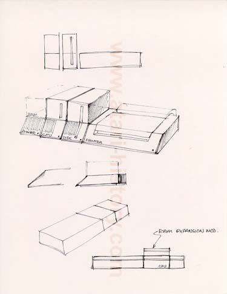

This design goes along the
same lines as several of the others with A computer system in seperate
modules either plugged into each other or design-chained to one another
via a bus-cabling system. The lower images show a more low
profile styled system which would emply the use of stackable add-on devices
to the CPU module.